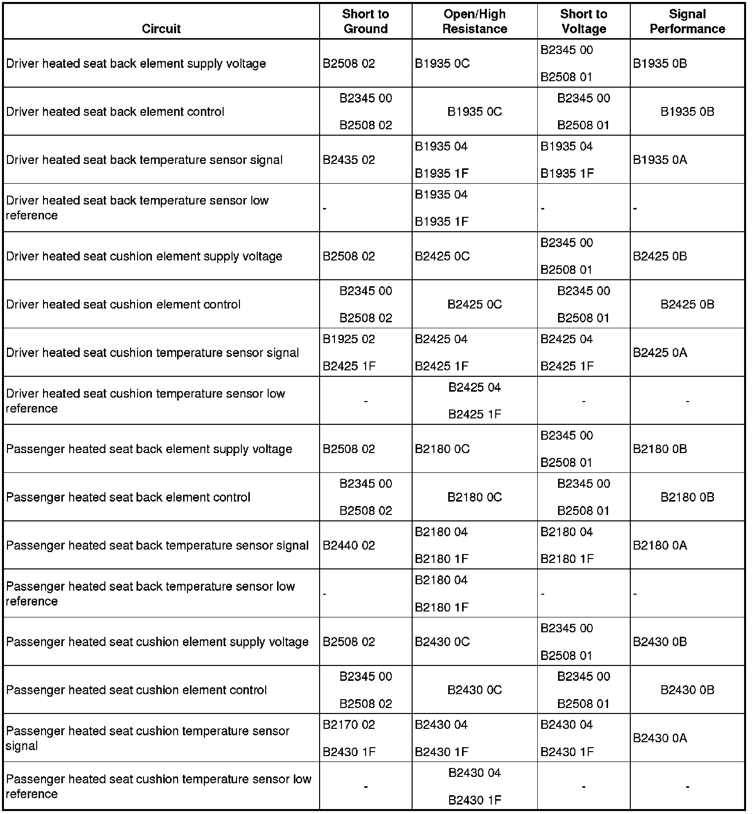

B2440
DTC B2435 or B2440
Diagnostic Instructions
* Perform the Diagnostic System Check - Vehicle (Initial Inspection and Diagnostic Overview) prior to using this diagnostic procedure.
* Review Strategy Based Diagnosis (Initial Inspection and Diagnostic Overview) for an overview of the diagnostic approach.
* Diagnostic Procedure Instructions (Initial Inspection and Diagnostic Overview) provides an overview of each diagnostic category.
DTC Descriptors
DTC B2435 02
- Left Seat Back Heater Sensor Circuit Short to Ground
DTC B2435 05
- Left Seat Back Heater Sensor Circuit Short to Battery or Open
DTC B2440 02
- Right Seat Back Heater Sensor Circuit Short to Ground
DTC B2440 05
- Right Seat Back Heater Sensor Circuit Short to Battery or Open
Diagnostic Fault Information

Circuit/System Description
The heated seat temperature sensor that set this diagnostic trouble code (DTC) is located in seat back just under the seat cover with the seat heating element. The memory seat module (MSM) supplies a separate 5-volt reference voltage through the temperature sensor signal circuit and a ground through the low reference circuit to the sensor. The MSM monitors the voltage of the sensor signal circuits to determine the temperature of the seat. The temperature sensor varies in resistance based on the temperature of the heating element, causing the signal voltage to change. Once the seat reaches the set temperature, the MSM will cycle the control circuits of the heating elements ON and OFF in order to maintain the desired seat temperature based on the feedback voltage from the sensors.
Conditions for Running the DTC
The heated seat system must be active.
Conditions for Setting the DTC
B2435, B2440 02
The temperature sensor voltage drops below 0.80 volts for more than 1 second.
B2435, B2440 05
The temperature sensor voltage is greater than 5 volts for more than 1 second.
Action Taken When the DTC Sets
The heated seat function for the affected seat will be disabled.
Conditions for Clearing the DTC
* The current DTC will clear and set the code to history, 3 seconds after the reference voltage returns to the normal operating range and the ignition is cycled OFF then back to ACC or RUN.
* The history DTC will clear after 50 consecutive fault-free ignition cycles have occurred.
Reference Information
Schematic Reference
Heated/Cooled Seat Schematics ([1][2]Electrical Diagrams)
Connector End View Reference
Component Connector End Views (Connector Views)
Description and Operation
Heated Seats Description and Operation (Description and Operation)
Electrical Information Reference
* Circuit Testing (Component Tests and General Diagnostics)
* Connector Repairs (Component Tests and General Diagnostics)
* Testing for Intermittent Conditions and Poor Connections (Component Tests and General Diagnostics)
* Wiring Repairs (Component Tests and General Diagnostics)
Scan Tool Reference
Control Module References (Programming and Relearning)
Circuit/System Testing
B2435
1. Ignition OFF, disconnect the X2 and X5 harness connectors at the MSM.
2. Ignition OFF, test for 3.2K-300K ohms of resistance between the signal circuit terminal 4 and the low reference circuit terminal 2.
• If greater than the specified range, test the signal circuit and low reference circuit for a short to voltage or an open/high resistance. If the circuits test normal, replace the seat back temperature sensor.
• If less than the specified range, test for a short between the signal and low reference circuits. If the circuits test normal, replace the seat back temperature sensor.
3. Connect the X2 and X5 harness connectors at the MSM.
4. Disconnect the harness connector at the seat back heating element/temperature sensor.
5. Ignition ON, test for 4.8-5.2 volts between the temperature sensor signal circuit terminal C and ground.
• If greater than the specified range, test the signal circuit for a short to voltage. If the circuit tests normal, replace the MSM.
• If less than the specified range, test the signal circuit for a short to ground. If the circuit tests normal, replace the MSM.
6. If all circuits test normal, replace the MSM.
B2440
1. Ignition OFF, disconnect the X2 and X5 harness connectors at the MSM.
2. Ignition OFF, test for 3.2K-300K ohms of resistance between the signal circuit terminal 3 and the low reference circuit terminal 6.
• If greater than the specified range, test the signal circuit and low reference circuit for a short to voltage or an open/high resistance. If the circuits test normal, replace the seat back temperature sensor.
• If less than the specified range, test for a short between the signal and low reference circuits. If the circuits test normal, replace the seat back temperature sensor.
3. Connect the X2 and X5 harness connectors at the MSM.
4. Disconnect the harness connector at the seat back heating element/temperature sensor.
5. Ignition ON, test for 4.8-5.2 volts between the temperature sensor signal circuit terminal C and ground.
• If greater than the specified range, test the signal circuit for a short to voltage. If the circuit tests normal, replace the MSM.
• If less than the specified range, test the signal circuit for a short to ground. If the circuit tests normal, replace the MSM.
6. If all circuits test normal, replace the MSM.
Repair Instructions
Perform the Diagnostic Repair Verification (Verification Tests) after completing the diagnostic procedure.
* Driver Seat Back Cushion Heater and Passenger Seat Back Cushion Heater Replacement (Driver Seat Back Cushion Heater and Passenger Seat Back Cushion Heater Replacement)
* Control Module References (Programming and Relearning) for MSM replacement, setup, and programming